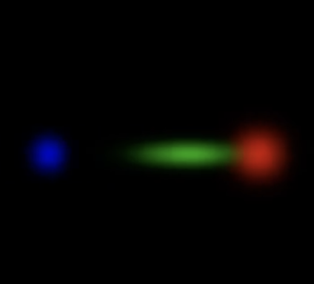

Image Synthesis Report
Gaussian Splatting
I chose to implement the Gaussian Splatting paper as it has certainly seen great interest in the past years... It is at the same time, a very general, and a very simple technique. Also, some details of this technique were quite unclear to me, for instance how reflections are rendered (I always thought it had to be something sophisticated, whereas it uses a simple model of spherical harmonics).
I started by looking at the references, such as Kerbl et al. 2023 and Zwicker et al. 2001. I wanted a more practical starting point, and I happened to find a Jupyter Notebook class by George Kopanas, where he teaches the basics of Gaussian Splatting rendering, and mainly the parts of how to correctly project both the mean and covariance of a gaussian, and how to blend the gaussians by depth sorting them first. I went through the notebook and I felt I was ready to start my WebGPU implementation.

I hardcoded the means, covariances, opacities, and colors of the 3 gaussians like above, and set up a camera. What I did then was to map the implementation from the notebook to WebGPU. I follow the base splatting process: project the means to clip space; splat covariances from 3d to 2d; order the gaussians by depth and render with alpha blending.
The projection of the mean to clip space is done by simply multiplying by the view projection matrix, however splatting the covariances needs more care because projection is a non linear operation, and so a gaussian after projection is not truly a gaussian anymore, but it's a little deformed. We approximate the covariance of the splatted gaussian by taking a first order approximation of the projection operator, so that it is now linear. Zwicker et al. derives the necessary equations for this, which I followed:
After being splatted, the gaussians' opacities are computed using the gaussian kernel:
And are then blended together like so:
I chose to feed my shaders my gaussians as 3D data, which would be projected/splatted in the vertex shader, and rendered in the pixel shader. This brought a problem, as I was already in the vertex shader when I computed the depth information of my gaussian in clip space! This did not allow me to properly alpha blend my gaussians, as it was too late to sort my draws by then. I decided to replicate the projection logic of the gaussians on the CPU side, and sort them there, then feed an array index that would allow my shader to draw gaussians in the correct ordering. This is mathematically described by the following equations:
I got stuck at some points here, such as ordering in the opposite order and not realizing it; at some point I also had a problem with alphas as well, which I needed to premultiply. I did some tests on this setup with 3 gaussians and everything was working. Time to proceed to the next step.
Now it was time to get some real gaussian splatting scenes to test our implementation. I fished some nice looking splats from SuperSplat, including a shoe, a fur armchair, and multiple delicious looking sushis.
At this point, I didn't want to really test my implementation right away on 1M+ gaussian scenes, and instead I decided that I wanted to figure out how to load data from splat scenes first, and render them with a point cloud, so that I could easily make sure that everything was working fine, before trying to map it back to my splat renderer.
Here I basically asked Codex to figure out how to download the scenes from SuperSplat, and load the data in JavaScript. It turned out there was an easy library to use called PlayCanvas (which turns out to also be the creator of SuperSplat itself). It came in very handy and saved me from the difficulties in reading splat data in various formats they come in (.ply, .webp, etc.).
After having scene data easily accessible in JS, I coded a simple point cloud renderer (just quad billboards for dots, with a simple orbit camera) to make sure that the data I was reading made sense e.g. points were in the right place, colors looked right, orientation looked right.
I was now confident in mapping it back to my original implementation. This was just a matter of setting correct values for each buffer (means, covariances, opacities, colors). This is the result as you see in the app at the top of the report.
However there are some problems, that I wasn't able to fix before handing in the report. The one that is puzzling me, is how the splats seem to stretch in some directions as my camera goes near them. I did really try to track down exactly why this is happening, it's still not obvious to me.
And of course, there are some obvious improvements to be made. The scenes would look much better by using spherical harmonics; I was especially interested in this, since it's a simple way to capture nice looking effects of reflection as well as refraction without introducing major inductive bias.
More sophisticated improvements would be a tiling renderer, done completely in the compute shader, as was done in the original paper. I think this would be fun to try and benchmark compared to my current approach. Still on compute shaders, the sort really also deserves being passed on to the GPU (radix sort). But I was surprised to see that the CPU implementation didn't completely impede rendering of 1M+ gaussians at a few FPS.
Performance Results
All tests were done on a MacBook Pro M1.
| Scene | Number of Gaussians | FPS |
|---|---|---|
| Fur Armchair | 350,000 | 21 |
| Burger | 992,133 | 5 |
| Mexican Sushi | 135,007 | 55 |
| Philadelphia Roll | 431,142 | 18 |
| Ramen Bowl | 1,000,000 | 7 |
| Salmon Roll 1 | 480,576 | 15 |
| Salmon Roll 2 | 233,320 | 34 |
| Shoe | 356,453 | 7 |
| Vegetables | 2,550,850 | 3 |